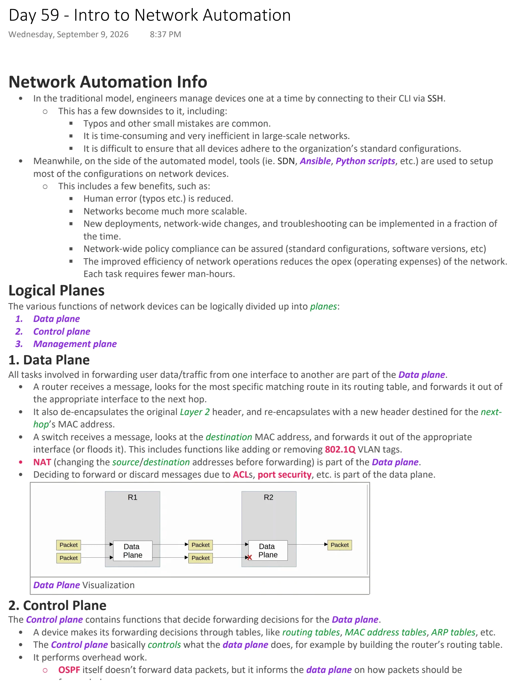
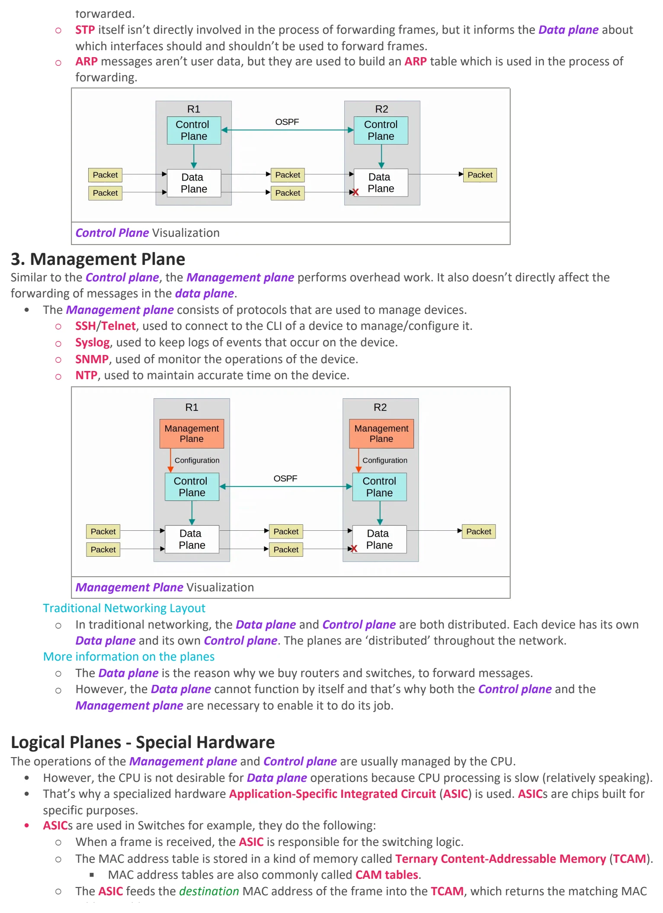
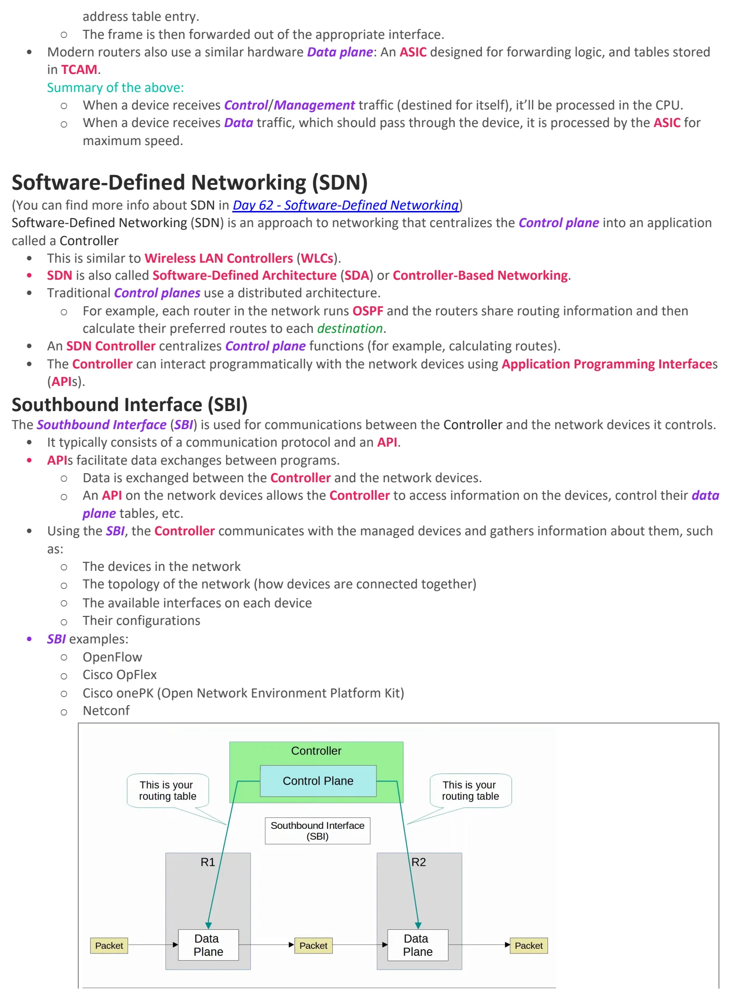
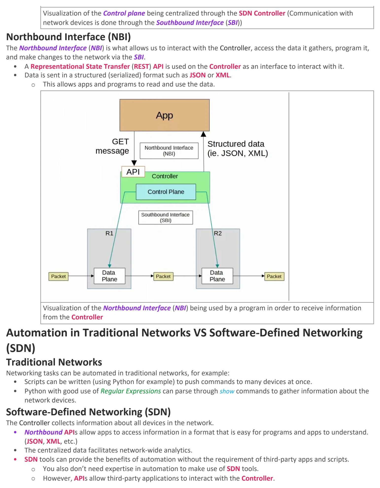

Intro to Network Automation
Download original PDF



Text view — Intro to Network Automation
Extracted from the original export. Diagrams and some formatting appear in the notes above.
Day 59 - Intro to Network Automation Wednesday, September 9, 2026 8:37 PM Network Automation Info • In the traditional model, engineers manage devices one at a time by connecting to their CLI via SSH. ○ This has a few downsides to it, including: § Typos and other small mistakes are common. § It is time-consuming and very inefficient in large-scale networks. § It is difficult to ensure that all devices adhere to the organization’s standard configurations. • Meanwhile, on the side of the automated model, tools (ie. SDN, Ansible, Python scripts, etc.) are used to setup most of the configurations on network devices. ○ This includes a few benefits, such as: § Human error (typos etc.) is reduced. § Networks become much more scalable. § New deployments, network-wide changes, and troubleshooting can be implemented in a fraction of the time. § Network-wide policy compliance can be assured (standard configurations, software versions, etc) § The improved efficiency of network operations reduces the opex (operating expenses) of the network. Each task requires fewer man-hours. Logical Planes The various functions of network devices can be logically divided up into planes: 1. Data plane 2. Control plane 3. Management plane 1. Data Plane All tasks involved in forwarding user data/traffic from one interface to another are part of the Data plane. • A router receives a message, looks for the most specific matching route in its routing table, and forwards it out of the appropriate interface to the next hop. • It also de-encapsulates the original Layer 2 header, and re-encapsulates with a new header destined for the next- hop’s MAC address. • A switch receives a message, looks at the destination MAC address, and forwards it out of the appropriate interface (or floods it). This includes functions like adding or removing 802.1Q VLAN tags. • NAT (changing the source/destination addresses before forwarding) is part of the Data plane. • Deciding to forward or discard messages due to ACLs, port security, etc. is part of the data plane. Data Plane Visualization 2. Control Plane The Control plane contains functions that decide forwarding decisions for the Data plane. • A device makes its forwarding decisions through tables, like routing tables, MAC address tables, ARP tables, etc. • The Control plane basically controls what the data plane does, for example by building the router’s routing table. • It performs overhead work. ○ OSPF itself doesn’t forward data packets, but it informs the data plane on how packets should be forwarded. ○ STP itself isn’t directly involved in the process of forwarding frames, but it informs the Data plane about which interfaces should and shouldn’t be used to forward frames. ○ ARP messages aren’t user data, but they are used to build an ARP table which is used in the process of forwarding. Control Plane Visualization 3. Management Plane Similar to the Control plane, the Management plane performs overhead work. It also doesn’t directly affect the forwarding of messages in the data plane. • The Management plane consists of protocols that are used to manage devices. ○ SSH/Telnet, used to connect to the CLI of a device to manage/configure it. ○ Syslog, used to keep logs of events that occur on the device. ○ SNMP, used of monitor the operations of the device. ○ NTP, used to maintain accurate time on the device. Management Plane Visualization Traditional Networking Layout ○ In traditional networking, the Data plane and Control plane are both distributed. Each device has its own Data plane and its own Control plane. The planes are ‘distributed’ throughout the network. More information on the planes ○ The Data plane is the reason why we buy routers and switches, to forward messages. ○ However, the Data plane cannot function by itself and that’s why both the Control plane and the Management plane are necessary to enable it to do its job. Logical Planes - Special Hardware The operations of the Management plane and Control plane are usually managed by the CPU. • However, the CPU is not desirable for Data plane operations because CPU processing is slow (relatively speaking). • That’s why a specialized hardware Application-Specific Integrated Circuit (ASIC) is used. ASICs are chips built for specific purposes. • ASICs are used in Switches for example, they do the following: ○ When a frame is received, the ASIC is responsible for the switching logic. ○ The MAC address table is stored in a kind of memory called Ternary Content-Addressable Memory (TCAM). § MAC address tables are also commonly called CAM tables. ○ The ASIC feeds the destination MAC address of the frame into the TCAM, which returns the matching MAC address table entry. ○ The frame is then forwarded out of the appropriate interface. • Modern routers also use a similar hardware Data plane: An ASIC designed for forwarding logic, and tables stored in TCAM. Summary of the above: ○ When a device receives Control/Management traffic (destined for itself), it’ll be processed in the CPU. ○ When a device receives Data traffic, which should pass through the device, it is processed by the ASIC for maximum speed. Software-Defined Networking (SDN) (You can find more info about SDN in Day 62 - Software-Defined Networking) Software-Defined Networking (SDN) is an approach to networking that centralizes the Control plane into an application called a Controller • This is similar to Wireless LAN Controllers (WLCs). • SDN is also called Software-Defined Architecture (SDA) or Controller-Based Networking. • Traditional Control planes use a distributed architecture. ○ For example, each router in the network runs OSPF and the routers share routing information and then calculate their preferred routes to each destination. • An SDN Controller centralizes Control plane functions (for example, calculating routes). • The Controller can interact programmatically with the network devices using Application Programming Interfaces (APIs). Southbound Interface (SBI) The Southbound Interface (SBI) is used for communications between the Controller and the network devices it controls. • It typically consists of a communication protocol and an API. • APIs facilitate data exchanges between programs. ○ Data is exchanged between the Controller and the network devices. ○ An API on the network devices allows the Controller to access information on the devices, control their data plane tables, etc. • Using the SBI, the Controller communicates with the managed devices and gathers information about them, such as: ○ The devices in the network ○ The topology of the network (how devices are connected together) ○ The available interfaces on each device ○ Their configurations • SBI examples: ○ OpenFlow ○ Cisco OpFlex ○ Cisco onePK (Open Network Environment Platform Kit) ○ Netconf Visualization of the Control plane being centralized through the SDN Controller (Communication with network devices is done through the Southbound Interface (SBI)) Northbound Interface (NBI) The Northbound Interface (NBI) is what allows us to interact with the Controller, access the data it gathers, program it, and make changes to the network via the SBI. • A Representational State Transfer (REST) API is used on the Controller as an interface to interact with it. • Data is sent in a structured (serialized) format such as JSON or XML. ○ This allows apps and programs to read and use the data. Visualization of the Northbound Interface (NBI) being used by a program in order to receive information from the Controller Automation in Traditional Networks VS Software-Defined Networking (SDN) Traditional Networks Networking tasks can be automated in traditional networks, for example: • Scripts can be written (using Python for example) to push commands to many devices at once. • Python with good use of Regular Expressions can parse through show commands to gather information about the network devices. Software-Defined Networking (SDN) The Controller collects information about all devices in the network. • Northbound APIs allow apps to access information in a format that is easy for programs and apps to understand. (JSON, XML, etc.) • The centralized data facilitates network-wide analytics. • SDN tools can provide the benefits of automation without the requirement of third-party apps and scripts. ○ You also don’t need expertise in automation to make use of SDN tools. ○ However, APIs allow third-party applications to interact with the Controller. Day 59 - Intro to Network Automation Wednesday, September 9, 2026 8:37 PM Network Automation Info • In the traditional model, engineers manage devices one at a time by connecting to their CLI via SSH. ○ This has a few downsides to it, including: § Typos and other small mistakes are common. § It is time-consuming and very inefficient in large-scale networks. § It is difficult to ensure that all devices adhere to the organization’s standard configurations. • Meanwhile, on the side of the automated model, tools (ie. SDN, Ansible, Python scripts, etc.) are used to setup most of the configurations on network devices. ○ This includes a few benefits, such as: § Human error (typos etc.) is reduced. § Networks become much more scalable. § New deployments, network-wide changes, and troubleshooting can be implemented in a fraction of the time. § Network-wide policy compliance can be assured (standard configurations, software versions, etc) § The improved efficiency of network operations reduces the opex (operating expenses) of the network. Each task requires fewer man-hours. Logical Planes The various functions of network devices can be logically divided up into planes: 1. Data plane 2. Control plane 3. Management plane 1. Data Plane All tasks involved in forwarding user data/traffic from one interface to another are part of the Data plane. • A router receives a message, looks for the most specific matching route in its routing table, and forwards it out of the appropriate interface to the next hop. • It also de-encapsulates the original Layer 2 header, and re-encapsulates with a new header destined for the next- hop’s MAC address. • A switch receives a message, looks at the destination MAC address, and forwards it out of the appropriate interface (or floods it). This includes functions like adding or removing 802.1Q VLAN tags. • NAT (changing the source/destination addresses before forwarding) is part of the Data plane. • Deciding to forward or discard messages due to ACLs, port security, etc. is part of the data plane. Data Plane Visualization 2. Control Plane The Control plane contains functions that decide forwarding decisions for the Data plane. • A device makes its forwarding decisions through tables, like routing tables, MAC address tables, ARP tables, etc. • The Control plane basically controls what the data plane does, for example by building the router’s routing table. • It performs overhead work. ○ OSPF itself doesn’t forward data packets, but it informs the data plane on how packets should be forwarded. ○ STP itself isn’t directly involved in the process of forwarding frames, but it informs the Data plane about which interfaces should and shouldn’t be used to forward frames. ○ ARP messages aren’t user data, but they are used to build an ARP table which is used in the process of forwarding. Control Plane Visualization 3. Management Plane Similar to the Control plane, the Management plane performs overhead work. It also doesn’t directly affect the forwarding of messages in the data plane. • The Management plane consists of protocols that are used to manage devices. ○ SSH/Telnet, used to connect to the CLI of a device to manage/configure it. ○ Syslog, used to keep logs of events that occur on the device. ○ SNMP, used of monitor the operations of the device. ○ NTP, used to maintain accurate time on the device. Management Plane Visualization Traditional Networking Layout ○ In traditional networking, the Data plane and Control plane are both distributed. Each device has its own Data plane and its own Control plane. The planes are ‘distributed’ throughout the network. More information on the planes ○ The Data plane is the reason why we buy routers and switches, to forward messages. ○ However, the Data plane cannot function by itself and that’s why both the Control plane and the Management plane are necessary to enable it to do its job. Logical Planes - Special Hardware The operations of the Management plane and Control plane are usually managed by the CPU. • However, the CPU is not desirable for Data plane operations because CPU processing is slow (relatively speaking). • That’s why a specialized hardware Application-Specific Integrated Circuit (ASIC) is used. ASICs are chips built for specific purposes. • ASICs are used in Switches for example, they do the following: ○ When a frame is received, the ASIC is responsible for the switching logic. ○ The MAC address table is stored in a kind of memory called Ternary Content-Addressable Memory (TCAM). § MAC address tables are also commonly called CAM tables. ○ The ASIC feeds the destination MAC address of the frame into the TCAM, which returns the matching MAC address table entry. ○ The frame is then forwarded out of the appropriate interface. • Modern routers also use a similar hardware Data plane: An ASIC designed for forwarding logic, and tables stored in TCAM. Summary of the above: ○ When a device receives Control/Management traffic (destined for itself), it’ll be processed in the CPU. ○ When a device receives Data traffic, which should pass through the device, it is processed by the ASIC for maximum speed. Software-Defined Networking (SDN) (You can find more info about SDN in Day 62 - Software-Defined Networking) Software-Defined Networking (SDN) is an approach to networking that centralizes the Control plane into an application called a Controller • This is similar to Wireless LAN Controllers (WLCs). • SDN is also called Software-Defined Architecture (SDA) or Controller-Based Networking. • Traditional Control planes use a distributed architecture. ○ For example, each router in the network runs OSPF and the routers share routing information and then calculate their preferred routes to each destination. • An SDN Controller centralizes Control plane functions (for example, calculating routes). • The Controller can interact programmatically with the network devices using Application Programming Interfaces (APIs). Southbound Interface (SBI) The Southbound Interface (SBI) is used for communications between the Controller and the network devices it controls. • It typically consists of a communication protocol and an API. • APIs facilitate data exchanges between programs. ○ Data is exchanged between the Controller and the network devices. ○ An API on the network devices allows the Controller to access information on the devices, control their data plane tables, etc. • Using the SBI, the Controller communicates with the managed devices and gathers information about them, such as: ○ The devices in the network ○ The topology of the network (how devices are connected together) ○ The available interfaces on each device ○ Their configurations • SBI examples: ○ OpenFlow ○ Cisco OpFlex ○ Cisco onePK (Open Network Environment Platform Kit) ○ Netconf Visualization of the Control plane being centralized through the SDN Controller (Communication with network devices is done through the Southbound Interface (SBI)) Northbound Interface (NBI) The Northbound Interface (NBI) is what allows us to interact with the Controller, access the data it gathers, program it, and make changes to the network via the SBI. • A Representational State Transfer (REST) API is used on the Controller as an interface to interact with it. • Data is sent in a structured (serialized) format such as JSON or XML. ○ This allows apps and programs to read and use the data. Visualization of the Northbound Interface (NBI) being used by a program in order to receive information from the Controller Automation in Traditional Networks VS Software-Defined Networking (SDN) Traditional Networks Networking tasks can be automated in traditional networks, for example: • Scripts can be written (using Python for example) to push commands to many devices at once. • Python with good use of Regular Expressions can parse through show commands to gather information about the network devices. Software-Defined Networking (SDN) The Controller collects information about all devices in the network. • Northbound APIs allow apps to access information in a format that is easy for programs and apps to understand. (JSON, XML, etc.) • The centralized data facilitates network-wide analytics. • SDN tools can provide the benefits of automation without the requirement of third-party apps and scripts. ○ You also don’t need expertise in automation to make use of SDN tools. ○ However, APIs allow third-party applications to interact with the Controller. Day 59 - Intro to Network Automation Wednesday, September 9, 2026 8:37 PM Network Automation Info • In the traditional model, engineers manage devices one at a time by connecting to their CLI via SSH. ○ This has a few downsides to it, including: § Typos and other small mistakes are common. § It is time-consuming and very inefficient in large-scale networks. § It is difficult to ensure that all devices adhere to the organization’s standard configurations. • Meanwhile, on the side of the automated model, tools (ie. SDN, Ansible, Python scripts, etc.) are used to setup most of the configurations on network devices. ○ This includes a few benefits, such as: § Human error (typos etc.) is reduced. § Networks become much more scalable. § New deployments, network-wide changes, and troubleshooting can be implemented in a fraction of the time. § Network-wide policy compliance can be assured (standard configurations, software versions, etc) § The improved efficiency of network operations reduces the opex (operating expenses) of the network. Each task requires fewer man-hours. Logical Planes The various functions of network devices can be logically divided up into planes: 1. Data plane 2. Control plane 3. Management plane 1. Data Plane All tasks involved in forwarding user data/traffic from one interface to another are part of the Data plane. • A router receives a message, looks for the most specific matching route in its routing table, and forwards it out of the appropriate interface to the next hop. • It also de-encapsulates the original Layer 2 header, and re-encapsulates with a new header destined for the next- hop’s MAC address. • A switch receives a message, looks at the destination MAC address, and forwards it out of the appropriate interface (or floods it). This includes functions like adding or removing 802.1Q VLAN tags. • NAT (changing the source/destination addresses before forwarding) is part of the Data plane. • Deciding to forward or discard messages due to ACLs, port security, etc. is part of the data plane. Data Plane Visualization 2. Control Plane The Control plane contains functions that decide forwarding decisions for the Data plane. • A device makes its forwarding decisions through tables, like routing tables, MAC address tables, ARP tables, etc. • The Control plane basically controls what the data plane does, for example by building the router’s routing table. • It performs overhead work. ○ OSPF itself doesn’t forward data packets, but it informs the data plane on how packets should be forwarded. ○ STP itself isn’t directly involved in the process of forwarding frames, but it informs the Data plane about which interfaces should and shouldn’t be used to forward frames. ○ ARP messages aren’t user data, but they are used to build an ARP table which is used in the process of forwarding. Control Plane Visualization 3. Management Plane Similar to the Control plane, the Management plane performs overhead work. It also doesn’t directly affect the forwarding of messages in the data plane. • The Management plane consists of protocols that are used to manage devices. ○ SSH/Telnet, used to connect to the CLI of a device to manage/configure it. ○ Syslog, used to keep logs of events that occur on the device. ○ SNMP, used of monitor the operations of the device. ○ NTP, used to maintain accurate time on the device. Management Plane Visualization Traditional Networking Layout ○ In traditional networking, the Data plane and Control plane are both distributed. Each device has its own Data plane and its own Control plane. The planes are ‘distributed’ throughout the network. More information on the planes ○ The Data plane is the reason why we buy routers and switches, to forward messages. ○ However, the Data plane cannot function by itself and that’s why both the Control plane and the Management plane are necessary to enable it to do its job. Logical Planes - Special Hardware The operations of the Management plane and Control plane are usually managed by the CPU. • However, the CPU is not desirable for Data plane operations because CPU processing is slow (relatively speaking). • That’s why a specialized hardware Application-Specific Integrated Circuit (ASIC) is used. ASICs are chips built for specific purposes. • ASICs are used in Switches for example, they do the following: ○ When a frame is received, the ASIC is responsible for the switching logic. ○ The MAC address table is stored in a kind of memory called Ternary Content-Addressable Memory (TCAM). § MAC address tables are also commonly called CAM tables. ○ The ASIC feeds the destination MAC address of the frame into the TCAM, which returns the matching MAC address table entry. ○ The frame is then forwarded out of the appropriate interface. • Modern routers also use a similar hardware Data plane: An ASIC designed for forwarding logic, and tables stored in TCAM. Summary of the above: ○ When a device receives Control/Management traffic (destined for itself), it’ll be processed in the CPU. ○ When a device receives Data traffic, which should pass through the device, it is processed by the ASIC for maximum speed. Software-Defined Networking (SDN) (You can find more info about SDN in Day 62 - Software-Defined Networking) Software-Defined Networking (SDN) is an approach to networking that centralizes the Control plane into an application called a Controller • This is similar to Wireless LAN Controllers (WLCs). • SDN is also called Software-Defined Architecture (SDA) or Controller-Based Networking. • Traditional Control planes use a distributed architecture. ○ For example, each router in the network runs OSPF and the routers share routing information and then calculate their preferred routes to each destination. • An SDN Controller centralizes Control plane functions (for example, calculating routes). • The Controller can interact programmatically with the network devices using Application Programming Interfaces (APIs). Southbound Interface (SBI) The Southbound Interface (SBI) is used for communications between the Controller and the network devices it controls. • It typically consists of a communication protocol and an API. • APIs facilitate data exchanges between programs. ○ Data is exchanged between the Controller and the network devices. ○ An API on the network devices allows the Controller to access information on the devices, control their data plane tables, etc. • Using the SBI, the Controller communicates with the managed devices and gathers information about them, such as: ○ The devices in the network ○ The topology of the network (how devices are connected together) ○ The available interfaces on each device ○ Their configurations • SBI examples: ○ OpenFlow ○ Cisco OpFlex ○ Cisco onePK (Open Network Environment Platform Kit) ○ Netconf Visualization of the Control plane being centralized through the SDN Controller (Communication with network devices is done through the Southbound Interface (SBI)) Northbound Interface (NBI) The Northbound Interface (NBI) is what allows us to interact with the Controller, access the data it gathers, program it, and make changes to the network via the SBI. • A Representational State Transfer (REST) API is used on the Controller as an interface to interact with it. • Data is sent in a structured (serialized) format such as JSON or XML. ○ This allows apps and programs to read and use the data. Visualization of the Northbound Interface (NBI) being used by a program in order to receive information from the Controller Automation in Traditional Networks VS Software-Defined Networking (SDN) Traditional Networks Networking tasks can be automated in traditional networks, for example: • Scripts can be written (using Python for example) to push commands to many devices at once. • Python with good use of Regular Expressions can parse through show commands to gather information about the network devices. Software-Defined Networking (SDN) The Controller collects information about all devices in the network. • Northbound APIs allow apps to access information in a format that is easy for programs and apps to understand. (JSON, XML, etc.) • The centralized data facilitates network-wide analytics. • SDN tools can provide the benefits of automation without the requirement of third-party apps and scripts. ○ You also don’t need expertise in automation to make use of SDN tools. ○ However, APIs allow third-party applications to interact with the Controller. Day 59 - Intro to Network Automation Wednesday, September 9, 2026 8:37 PM Network Automation Info • In the traditional model, engineers manage devices one at a time by connecting to their CLI via SSH. ○ This has a few downsides to it, including: § Typos and other small mistakes are common. § It is time-consuming and very inefficient in large-scale networks. § It is difficult to ensure that all devices adhere to the organization’s standard configurations. • Meanwhile, on the side of the automated model, tools (ie. SDN, Ansible, Python scripts, etc.) are used to setup most of the configurations on network devices. ○ This includes a few benefits, such as: § Human error (typos etc.) is reduced. § Networks become much more scalable. § New deployments, network-wide changes, and troubleshooting can be implemented in a fraction of the time. § Network-wide policy compliance can be assured (standard configurations, software versions, etc) § The improved efficiency of network operations reduces the opex (operating expenses) of the network. Each task requires fewer man-hours. Logical Planes The various functions of network devices can be logically divided up into planes: 1. Data plane 2. Control plane 3. Management plane 1. Data Plane All tasks involved in forwarding user data/traffic from one interface to another are part of the Data plane. • A router receives a message, looks for the most specific matching route in its routing table, and forwards it out of the appropriate interface to the next hop. • It also de-encapsulates the original Layer 2 header, and re-encapsulates with a new header destined for the next- hop’s MAC address. • A switch receives a message, looks at the destination MAC address, and forwards it out of the appropriate interface (or floods it). This includes functions like adding or removing 802.1Q VLAN tags. • NAT (changing the source/destination addresses before forwarding) is part of the Data plane. • Deciding to forward or discard messages due to ACLs, port security, etc. is part of the data plane. Data Plane Visualization 2. Control Plane The Control plane contains functions that decide forwarding decisions for the Data plane. • A device makes its forwarding decisions through tables, like routing tables, MAC address tables, ARP tables, etc. • The Control plane basically controls what the data plane does, for example by building the router’s routing table. • It performs overhead work. ○ OSPF itself doesn’t forward data packets, but it informs the data plane on how packets should be forwarded. ○ STP itself isn’t directly involved in the process of forwarding frames, but it informs the Data plane about which interfaces should and shouldn’t be used to forward frames. ○ ARP messages aren’t user data, but they are used to build an ARP table which is used in the process of forwarding. Control Plane Visualization 3. Management Plane Similar to the Control plane, the Management plane performs overhead work. It also doesn’t directly affect the forwarding of messages in the data plane. • The Management plane consists of protocols that are used to manage devices. ○ SSH/Telnet, used to connect to the CLI of a device to manage/configure it. ○ Syslog, used to keep logs of events that occur on the device. ○ SNMP, used of monitor the operations of the device. ○ NTP, used to maintain accurate time on the device. Management Plane Visualization Traditional Networking Layout ○ In traditional networking, the Data plane and Control plane are both distributed. Each device has its own Data plane and its own Control plane. The planes are ‘distributed’ throughout the network. More information on the planes ○ The Data plane is the reason why we buy routers and switches, to forward messages. ○ However, the Data plane cannot function by itself and that’s why both the Control plane and the Management plane are necessary to enable it to do its job. Logical Planes - Special Hardware The operations of the Management plane and Control plane are usually managed by the CPU. • However, the CPU is not desirable for Data plane operations because CPU processing is slow (relatively speaking). • That’s why a specialized hardware Application-Specific Integrated Circuit (ASIC) is used. ASICs are chips built for specific purposes. • ASICs are used in Switches for example, they do the following: ○ When a frame is received, the ASIC is responsible for the switching logic. ○ The MAC address table is stored in a kind of memory called Ternary Content-Addressable Memory (TCAM). § MAC address tables are also commonly called CAM tables. ○ The ASIC feeds the destination MAC address of the frame into the TCAM, which returns the matching MAC address table entry. ○ The frame is then forwarded out of the appropriate interface. • Modern routers also use a similar hardware Data plane: An ASIC designed for forwarding logic, and tables stored in TCAM. Summary of the above: ○ When a device receives Control/Management traffic (destined for itself), it’ll be processed in the CPU. ○ When a device receives Data traffic, which should pass through the device, it is processed by the ASIC for maximum speed. Software-Defined Networking (SDN) (You can find more info about SDN in Day 62 - Software-Defined Networking) Software-Defined Networking (SDN) is an approach to networking that centralizes the Control plane into an application called a Controller • This is similar to Wireless LAN Controllers (WLCs). • SDN is also called Software-Defined Architecture (SDA) or Controller-Based Networking. • Traditional Control planes use a distributed architecture. ○ For example, each router in the network runs OSPF and the routers share routing information and then calculate their preferred routes to each destination. • An SDN Controller centralizes Control plane functions (for example, calculating routes). • The Controller can interact programmatically with the network devices using Application Programming Interfaces (APIs). Southbound Interface (SBI) The Southbound Interface (SBI) is used for communications between the Controller and the network devices it controls. • It typically consists of a communication protocol and an API. • APIs facilitate data exchanges between programs. ○ Data is exchanged between the Controller and the network devices. ○ An API on the network devices allows the Controller to access information on the devices, control their data plane tables, etc. • Using the SBI, the Controller communicates with the managed devices and gathers information about them, such as: ○ The devices in the network ○ The topology of the network (how devices are connected together) ○ The available interfaces on each device ○ Their configurations • SBI examples: ○ OpenFlow ○ Cisco OpFlex ○ Cisco onePK (Open Network Environment Platform Kit) ○ Netconf Visualization of the Control plane being centralized through the SDN Controller (Communication with network devices is done through the Southbound Interface (SBI)) Northbound Interface (NBI) The Northbound Interface (NBI) is what allows us to interact with the Controller, access the data it gathers, program it, and make changes to the network via the SBI. • A Representational State Transfer (REST) API is used on the Controller as an interface to interact with it. • Data is sent in a structured (serialized) format such as JSON or XML. ○ This allows apps and programs to read and use the data. Visualization of the Northbound Interface (NBI) being used by a program in order to receive information from the Controller Automation in Traditional Networks VS Software-Defined Networking (SDN) Traditional Networks Networking tasks can be automated in traditional networks, for example: • Scripts can be written (using Python for example) to push commands to many devices at once. • Python with good use of Regular Expressions can parse through show commands to gather information about the network devices. Software-Defined Networking (SDN) The Controller collects information about all devices in the network. • Northbound APIs allow apps to access information in a format that is easy for programs and apps to understand. (JSON, XML, etc.) • The centralized data facilitates network-wide analytics. • SDN tools can provide the benefits of automation without the requirement of third-party apps and scripts. ○ You also don’t need expertise in automation to make use of SDN tools. ○ However, APIs allow third-party applications to interact with the Controller.